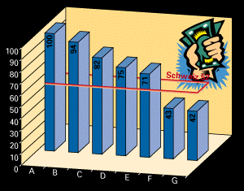
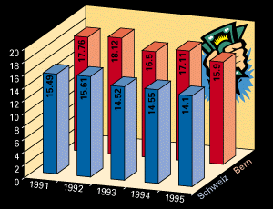
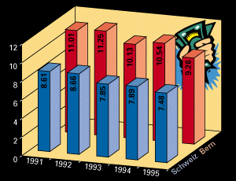
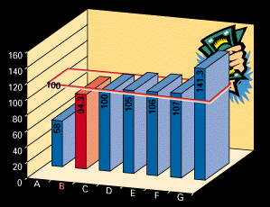

A = Italien
B = Frankreich
C = Deutschland
D = Japan
E = Schweden
F = USA
G = Grossbritannien

verheiratet, keine Kinder,
Bruttoeinkommen Fr. 50'000.-

verheiratet, keine Kinder,
Bruttoeinkommen Fr. 100'000.-

Totalindex der Reingewinn- und Kapitalsteuerbelastung für Aktiengesellschaften ohne Beteiligungen
A = Zug
B = Bern
C = Freiburg
D = Aargau
E = Solothurn
F = Zürich
G = Neuenburg
Der Kanton und somit auch die Stadt Bern kennen in ihrer Steuerordnung Regelungen zugunsten der Wirtschaft, die sich im schweizerischen Steuerrecht vorteilhaft hervorheben. Diese Spezialbestimmungen schaffen sowohl für neuangesiedelte als auch für bestehende Unternehmungen günstige Rahmenbedingungen. In den Bereichen Steuerbefreiung (Kapital- und Gewinnsteuern sowie Handänderungssteuern), Abschreibungen, Rückstellungen, stille Reserven, Dividendenabzug, Holding- und Domizilgesellschaften können nach Massgabe des Gesetzes zur Fürderung der Wirtschaft spezielle Vereinbarungen getroffen werden.